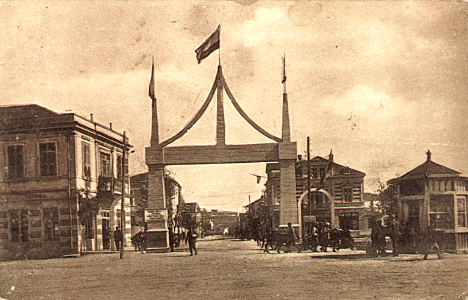
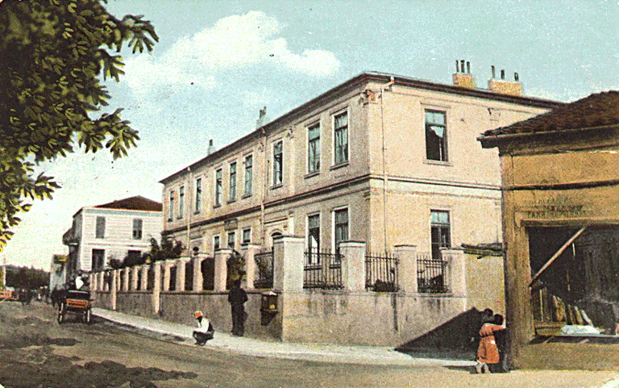
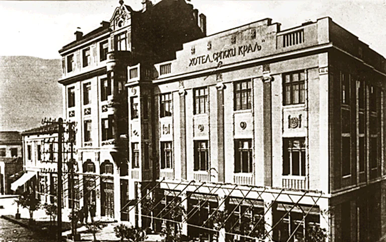
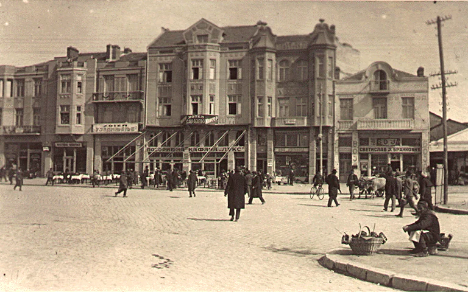
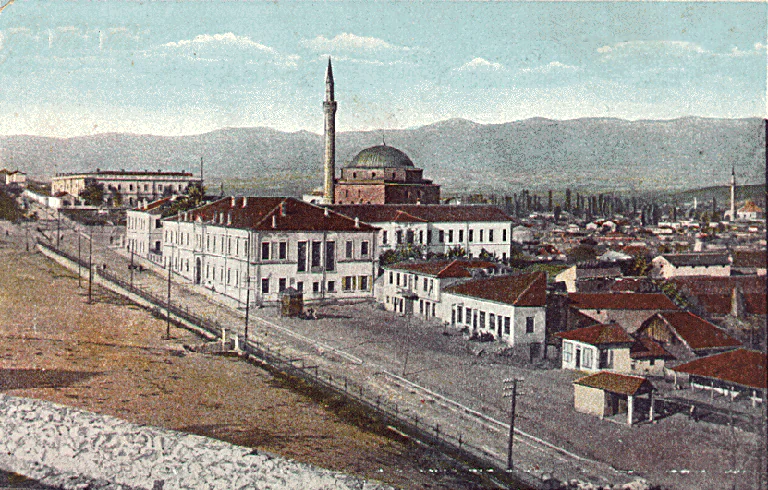
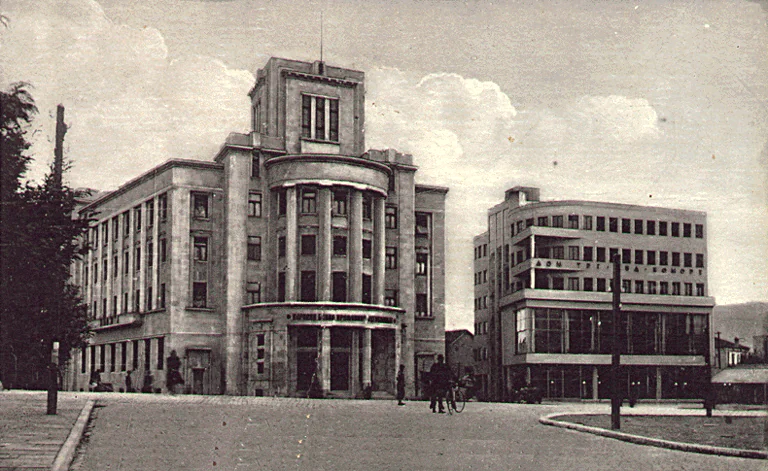
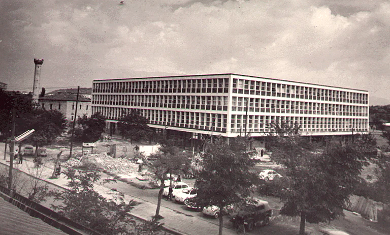
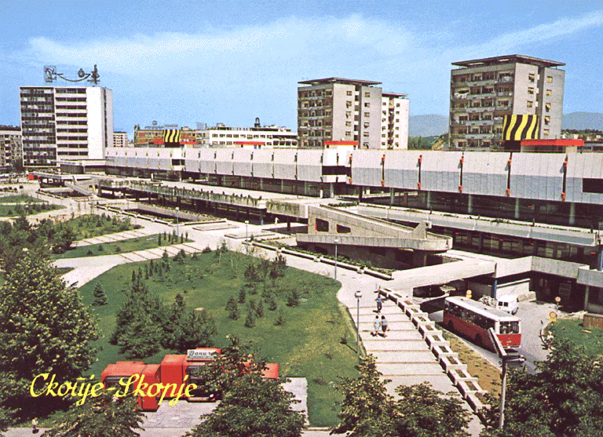

Üsküp 1916 - 1917 panorama 1
Balkan Savaşları'ndan belgeler
- Yıl
- 1916-1917
- Süre
- 00:11

Turati Oteli. 19. yüzyılın sonunda yapıldı.

Fotoğraf, Osmanlı İmparatorluğu döneminde 1873'te yapılan eski tren garının - bugünkü Üsküp Şehir Müzesi'nin - binasından çekildi. Ön planda çitle çevrili yeşil alanlarla gara yaklaşım. Ötesinde meydana giden ana cadde. Caddenin başında solda "Rusija" oteli.

"Makedonija" ana caddesine bakış. Kapı önemli bir konuğun onuruna kurulmuş. Solunda "Rusija" oteli var. - 20. yüzyılın başı.

Adliye binası, 1920'ler.

Adliye binası, 1920'ler.

Yahudi cemaatinin binası - 1920'ler.

Sırp rahibelerin evi - 1920'ler.

1930'dan sonra Üsküp. Bugünkü Üsküp Şehir Müzesi'nden meydana doğru ana caddeye bakış. İki yüksek bina, eklektik mimari ayrıntılara sahip Grand Hotel "Bristol" ve sağındaki "Srpski Kralj" oteli.

Srpski Kralj ve Bristol otelleri. - 1920'ler.

Čitkušev kardeşlerin evi. - 1920'ler

Halk arasında Ristić Sarayı denen eczacı Ristić'in evi. Fotoğrafın solunda "Bel Orel" otelinin bir bölümü görülüyor. (1920'ler)

Ristić Sarayı - 1925 civarı.

Ristić Sarayı. Fotoğrafın solunda "Bel Orel" otelinin bir bölümü görülüyor. (1925 civarı)

"Pariz" Oteli. Bira salonu ve pastanenin bulunduğu otel avlusu fotoğraflanmış. - 1920'ler

"Moskva" Oteli - 1930'lar

Osmanlı Bankası - 1910 civarı.

Taş Köprü'nün hemen yanında, Vardar'ın sol kıyısındaki küçük meydan. Ön planda Balkan Savaşları'nda düşenlerin anıtı, sağda arkada Osmanlı Bankası.
- 1920'ler

Meydanda inşa halindeki yeni "Sarajevo" oteli. Solunda tiyatro kahvehanesi, üstünde eski "Sarajevo" oteli. - 1920'ler

"Sarajevo" oteli ve Üsküplülerin sevdiği ünlü "Marger" kahvehanesiyle meydan. "Sarajevo" otelinin solunda "Obedinuvanje" oteli vardı. Ön planda kaldırımda bir simitçi oturuyor. (1935 civarı)

Üsküp Kalesi'nin kışlası. - 1920'ler

Üsküp'teki hapishane binası. Mustafa Paşa Camii'nin hemen yanındaydı. - 19. yüzyılın sonu

Hükümet (belediye). Yanında Türk postanesi, arkasında Mustafa Paşa Camii. - 1920'ler

Hükümet (belediye). Yanında Türk postanesi. Arka planda Mustafa Paşa Camii görülüyor. - 1920'ler

Hükümet (belediye). Yanında Türk postanesi, arkasında Mustafa Paşa Camii. - 1920'ler

Maliye müfettişliği binası. Bugün Kıymetli Madenler Enstitüsü burada. Türk döneminde "Hükümet" (belediye) idi. - 1930'lar

1936'da inşa edilen spor salonu ya da Üsküp Sokol evi "Sokolana".

1936'da inşa edilen Üsküp Sokol salonu.

"Kızılay" askeri hastanesi - 19. yüzyılın sonu. Bina, Rönesans ve Barok biçimli akademik üslubuyla dikkat çeker.

19. yüzyılın sonunda yapılan "Kızılay" askeri hastanesi. Bina, Rönesans ve Barok biçimli akademik üslubuyla dikkat çeker. (1920'ler)

19. yüzyılın sonunda inşa edilen "Kızılay" askeri hastanesi.

19. yüzyılın sonunda inşa edilen "Kızılay" askeri hastanesi.

Bugünkü Üsküp Şehir Müzesi'nden meydana doğru ana caddeye bakış. Klasik ve Barok öğeli Kranga Sarayı'nda "Capitol" sineması vardı. Fotoğrafın arka planında Subaylar Evi. - 1930'lar

"Vardar" sanatoryumu - 1930'lar

Muayenehanesi Vardar'ın sol kıyısında Taş Köprü'nün hemen yanında olan diş hekimi Dr. Ruben'in evi. - 1930'lar

Posta binası. - 1930'lar

Mimar B. Nestorović'in tasarımıyla yapılan Milli Banka: süsleme öğelerinde sadeleştirilmiş akademik üslup ve modernist etkiler. - 1930'lar.

Gece Milli Banka. Önünde, halk arasında "Korzo" denen, Üsküplülerin gezinti yolunun bir bölümü. - 1930'lar.

Mimar B. Nestorović'in tasarımıyla yapılan Milli Banka: süsleme öğelerinde sadeleştirilmiş akademik üslup ve modernist etkiler. Sağda Ticaret Odası (mimar M. Zloković) - 1930'lar.

Arka planda Milli Banka ile Taş Köprü. - 1930'lar

Milli Banka, Subaylar Evi ve Taş Köprü'nün bir bölümü. - 1930'lar

Subaylar Evi ve Taş Köprü ile Milli Banka. Fotoğraf Vardar'ın sol kıyısından, faytonların durduğu küçük meydandan çekildi. (1930'lar)

Eski kız lisesi. - 1930'lar

Üsküp'teki termik santral - 1910

Üsküp'teki termik santralin içi - 1910

İlaç fabrikası. - 1920'ler.

Üsküp'teki ilk "Shell" benzin istasyonu. - 1927

Üsküp itfaiyecilerinin tatbikatı. - 1930'lar.

Eski çarşıda tipik bir terzi atölyesi - 1920

Atlı arabalı taşımacıların durağı. - 1920'ler

Üsküp'teki deri işleme fabrikası. - 1920'ler.

Üsküp'te, Kisela Voda'da, Vodno yamaçlarındaki taş ocağı. - 1920'ler.

Üsküp yakınlarındaki havaalanı - 1933. Bugünkü Aerodrom ve Jane Sandanski semtlerinin yerindeydi.

Üsküp'te hipodrom. (1920'lerin sonu)

"Vardar" sineması - 1940'lar. İki dünya savaşı arasında Üsküp'te şu sinemalar vardı: Zrinjski, Apollo (1930'da yandı; yerine Korzo sineması yapıldı), Balkan, Vardar, Capitol, Urania ve Avala.

Birinci Dünya Savaşı'nda ölen öğrencilerin anıtı - 1920'ler.

Şehir eczanesi. - 1932.

İşçi Sigorta Kurumu (bugünkü Şehir Hastanesi). - 1930'lar

Makedonya Cumhuriyeti Meclisi, 1940'lar. O yıllarda bölge müdürlüğüydü.

Bugünkü Makedonya Cumhuriyeti Meclisi - depremden önceki yıllar.

Stara - Nova Banja. Bugünkü "Aziz Kiril ve Metodi" Üniversitesi'nin yerindeki Üsküp bölümü

1950'lerde yapılan İçişleri İdaresi binası. Sonradan hukuk, iktisat ve felsefe fakülteleri ile rektörlük buraya taşındı.

Depremden hemen sonra Adalet Sarayı. Yanında solda eski "Elen Kapan" camii var.

Şehir meydanının hemen yanındaki elektrik işletmesi binası (1962-1964).

Şehir Alışveriş Merkezi. İnşaatı resmî olarak 11 Ekim 1969'da başladı, orta kısmı 27 Nisan 1973'te açıldı; o zamandan beri bir kompleks olarak çalışıyor.

"Savaşçı Kadın" parkının bir bölümüyle Şehir Alışveriş Merkezi (1969 - 1973).

Şehir Alışveriş Merkezi (1969 - 1973) ve "Savaşçı Kadın" parkının düzenlenmiş alanı.


Balkan Savaşları'ndan belgeler
Film Haberleri no. 21
 Su kemeri4 kartpostal
Su kemeri4 kartpostal Kale30 kartpostal
Kale30 kartpostal Köprüler60 kartpostal
Köprüler60 kartpostal Rıhtım58 kartpostal
Rıhtım58 kartpostal Meydan46 kartpostal
Meydan46 kartpostal Binalar66 kartpostal
Binalar66 kartpostal Hristiyan kiliseleri19 kartpostal
Hristiyan kiliseleri19 kartpostal İslami yapılar33 kartpostal
İslami yapılar33 kartpostal Subaylar Evi29 kartpostal
Subaylar Evi29 kartpostal Tiyatro28 kartpostal
Tiyatro28 kartpostal Tren garı13 kartpostal
Tren garı13 kartpostal Okullar36 kartpostal
Okullar36 kartpostal Parklar12 kartpostal
Parklar12 kartpostal Pazarlar18 kartpostal
Pazarlar18 kartpostal Sokaklar38 kartpostal
Sokaklar38 kartpostal Panorama I60 kartpostal
Panorama I60 kartpostal Panorama II30 kartpostal
Panorama II30 kartpostal Kolajlar55 kartpostal
Kolajlar55 kartpostal Seller9 kartpostal
Seller9 kartpostal Deprem27 kartpostal
Deprem27 kartpostal Üsküp 200026 kartpostal
Üsküp 200026 kartpostal